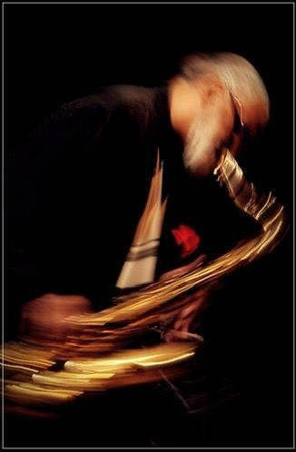

Schedule

Thursday
6:30 pm — Esperanza Spalding Trio
8:30 pm — Wynton Marsalis Quintet
10:30 pm — Jon Batiste & Friends
Friday
6:30 pm — Samara Joy
8:30 pm — Terence Blanchard Sextet
10:30 pm — Robert Glasper Experiment
Saturday
6:30 pm — Cécile McLorin Salvant
8:30 pm — Christian McBride Trio
10:30 pm — Trombone Shorty & Orleans Avenue
Sunday
6:30 pm — Melissa Aldana Quartet
8:30 pm — Branford Marsalis Quartet
10:30 pm — Herbie Hancock
F.A.Q.
What time should I arrive?
All of our seating is first
come, first served so arriving early will help get you seated closer to the stage.
We reserve the right to release your tickets 15 minutes after the scheduled start time if you have not arrived.
Do you seat incomplete parties
Yes, only one person from each party needs to be here in order to be seated and claim a table.
Do you require a minimum spend at the table?
we kindly ask for a $20 minimum spend on drinks per person